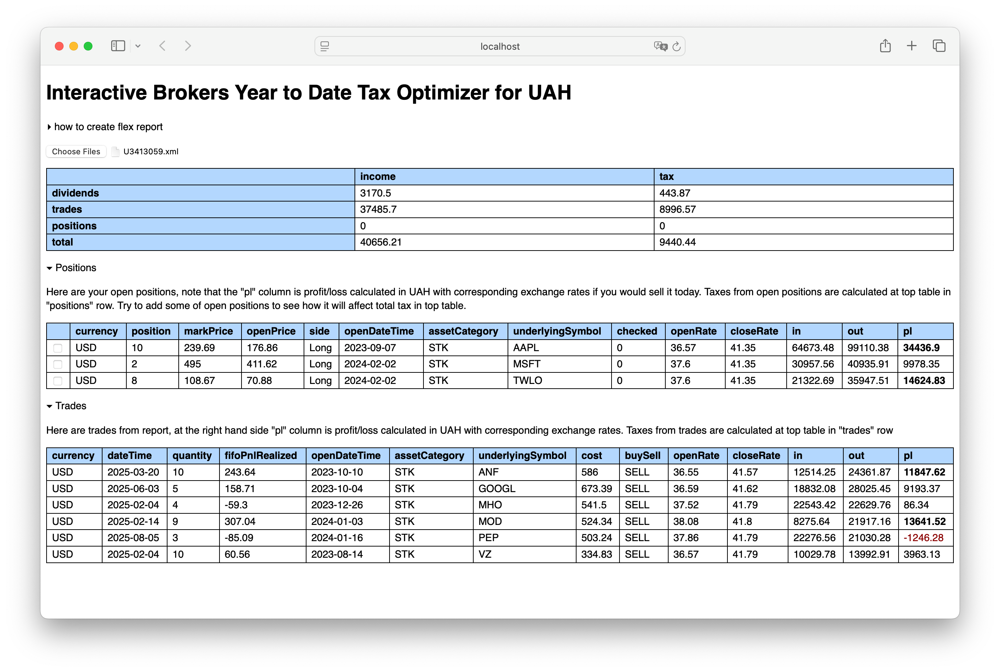
Upload your flex report(s) - note, if you have more than more account just create reports for all of them to see overall picture
At the top you will see calculated total tax - this one is approximate number you gonna need to pay for taxes
Below totals there is a table with your open positions - try to click on checkboxes to see how it will affect tax
Idea behind this - is that you may have overall feeling of how it would look like if you will decide to make some changes / allocations / movements in your portfolil
Navigate to Performance & Reports / Flex Queries
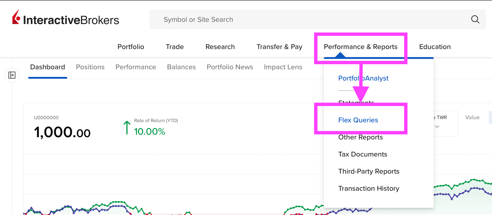
Create new flex report in "Activity Flex Query" section by pressing "+" plus sign on the right hand side
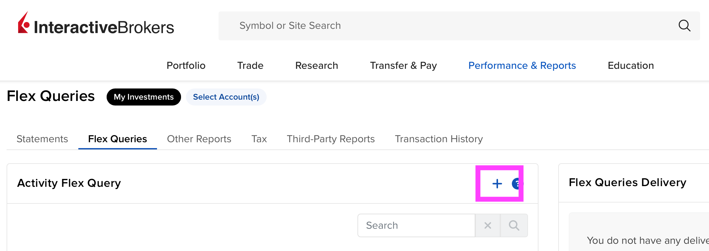
Give it some name
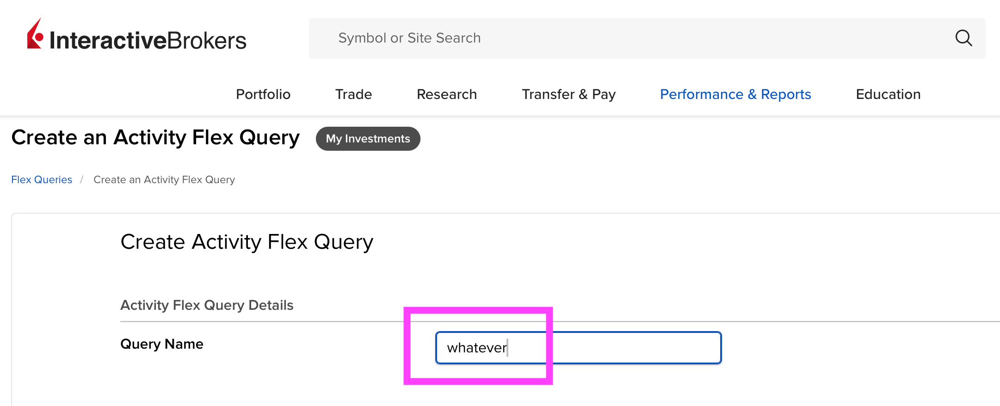
Cash Transactions
Click on "Cash Transactions" in Sections
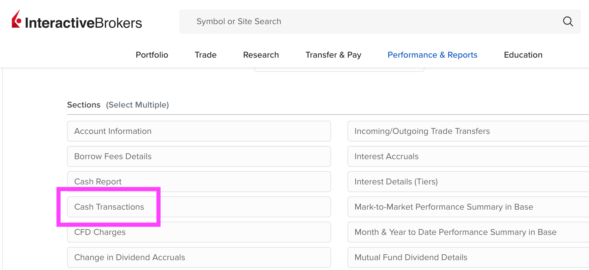
In options - choose "Summary"
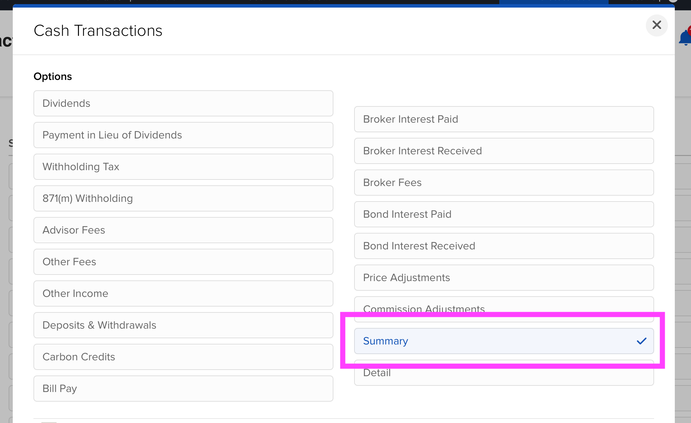
In columns - choose following
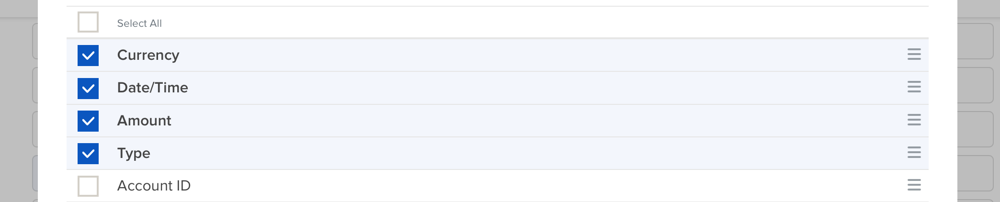
Open Positions
Click on "Open Positions" in Sections
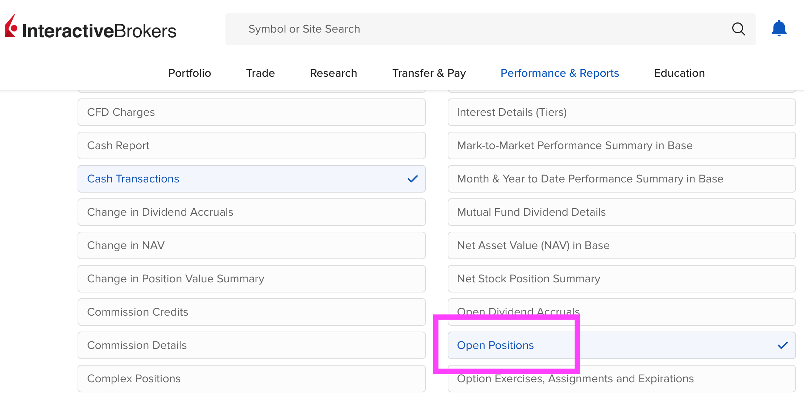
Configure "Lot" like so
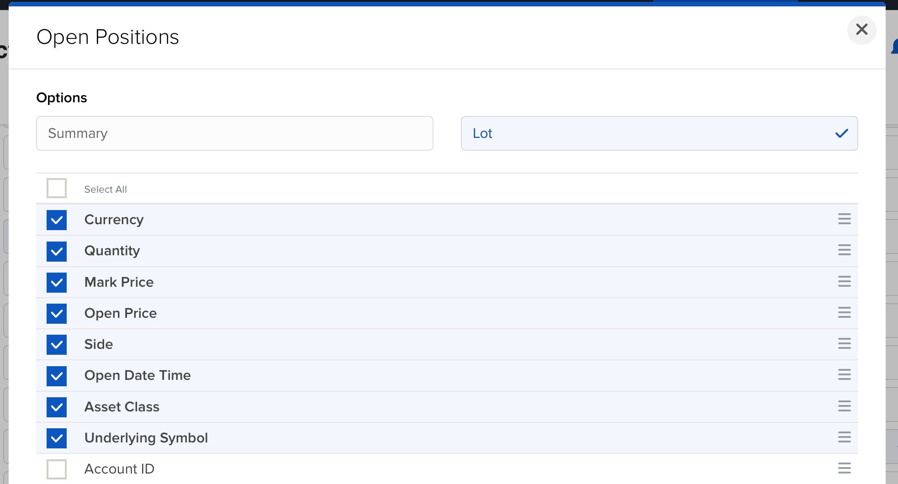
Trades
Click on "Trades" in Sections
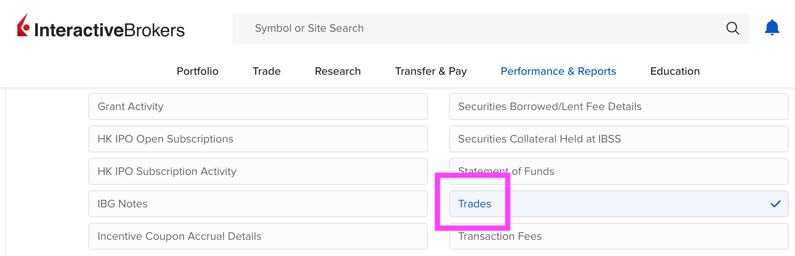
Configure "Closed Lot" like so:
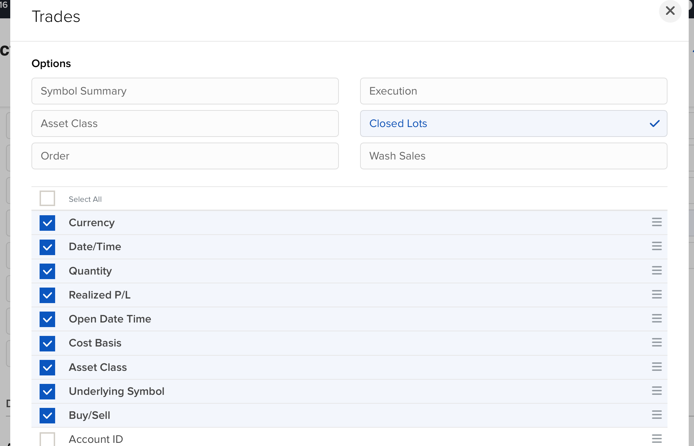
Delivery configuration
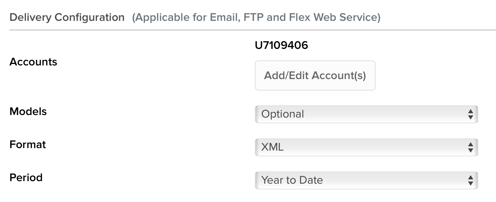
General configuration
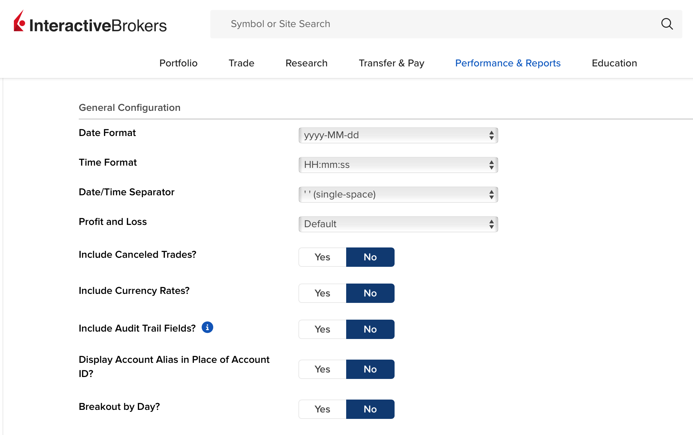
Save and run the report by clicking on arrow on a right side from created report
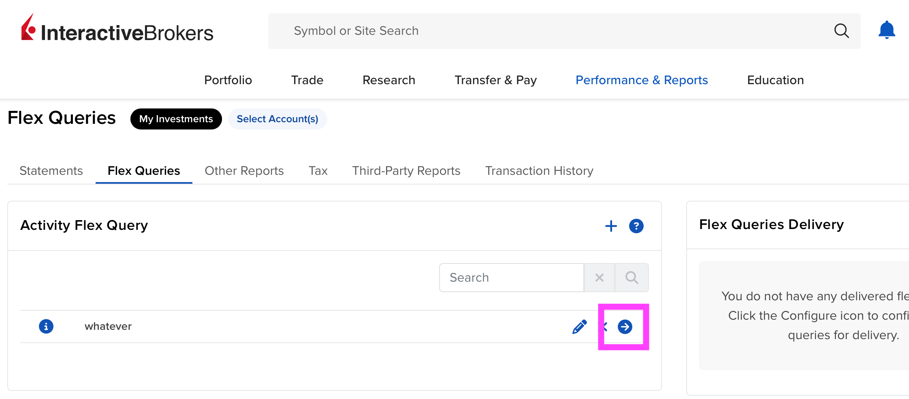
Confirm settings and click "Run" button
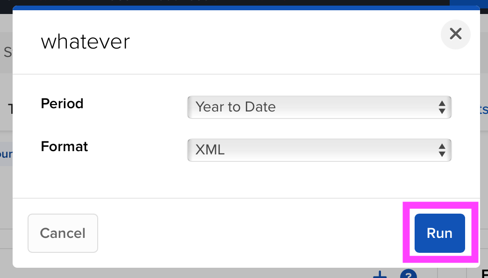
XML report should be downloaded shortly, next, upload it here
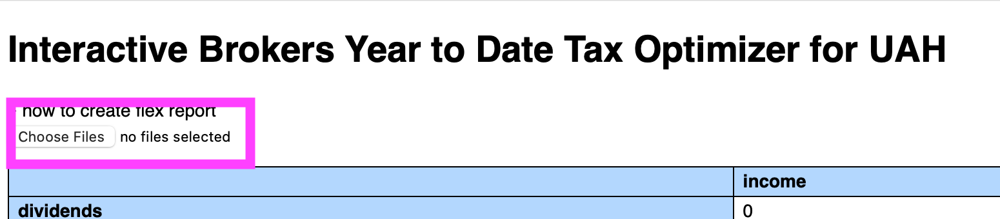
| income | tax | |
|---|---|---|
| dividends | 0 | 0 |
| trades | 0 | 0 |
| positions | 0 | 0 |
| total | 0 | 0 |
Here are your open positions, note that the "pl" column is profit/loss calculated in UAH with corresponding exchange rates if you would sell it today. Taxes from open positions are calculated at top table in "positions" row. Try to add some of open positions to see how it will affect total tax in top table.
Here are trades from report, at the right hand side "pl" column is profit/loss calculated in UAH with corresponding exchange rates. Taxes from trades are calculated at top table in "trades" row